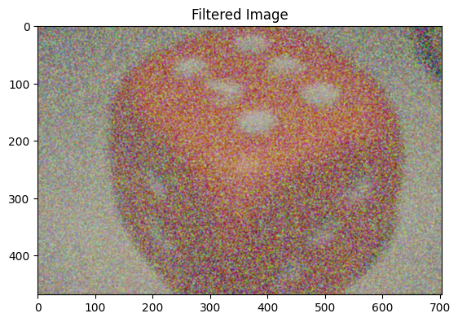
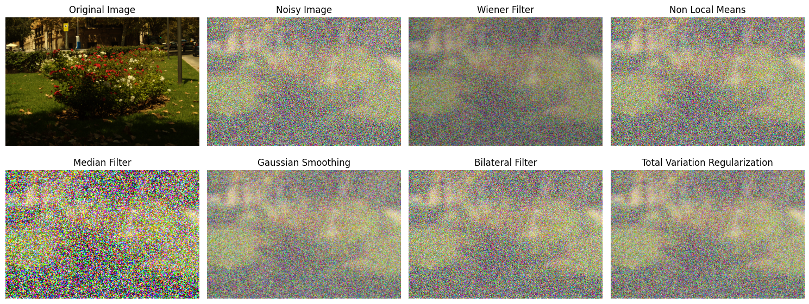
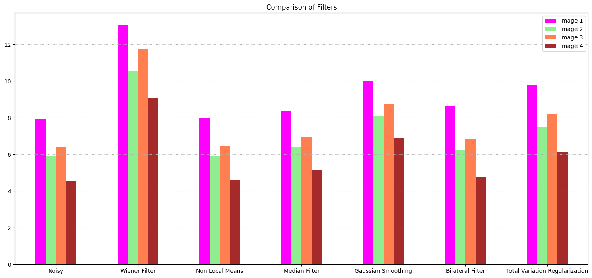

import numpy as np
import cv2
import matplotlib.pyplot as plt
import os
from scipy.ndimage import convolve1d
import pandas as pd
from skimage.metrics import peak_signal_noise_ratio
from skimage.restoration import denoise_tv_chambolleWiener Filter from Scratch
Image Processing
Custom Implemenation of the Wiener Filter from Scratch
Part 1 : Generating the Noisy Images using Inbuilt and Custom Functions
Importing the Libraries
Functions to add noise to the image
# add gaussian noise to image using inbuilt functions
def gaussian_noise_cv2(image, mean, std_dev):
noise = np.random.normal(mean, std_dev, image.shape).astype(np.uint8)
noisy_image = cv2.add(image, noise)
return noisy_image
# add defocus blur to image using inbuilt functions
def defocus_blur_cv2(image, kernel_size):
if kernel_size % 2 == 0: kernel_size += 1
kernel = np.ones((kernel_size, kernel_size), dtype=np.float32) / (kernel_size ** 2)
blurred_image = cv2.filter2D(image, -1, kernel)
return blurred_image
# function for performing addition to image in 32 bit and then clipping to 8 bit
def mimic_cv2_add(image, value):
result = image.astype(np.int32) + value
result[result < 0] = 0
result[result > 255] = 255
return result.astype(np.uint8)
# add gaussian noise to image using custom functions
def gaussian_noise_custom(image, mean, std_dev):
noise = np.random.normal(mean, std_dev, image.shape).astype(np.uint8)
noisy_image = mimic_cv2_add(image, noise)
return noisy_image
# add defocus blur to image using custom functions
def defocus_blur_custom(image, kernel_size):
if kernel_size % 2 == 0: kernel_size += 1
kernel = np.ones(kernel_size, dtype=np.float32) / kernel_size
blurred_image = np.apply_along_axis(convolve1d, axis=1, arr=image, weights=kernel, mode='constant', cval=0.0)
blurred_image = np.apply_along_axis(convolve1d, axis=0, arr=blurred_image, weights=kernel, mode='constant', cval=0.0)
return blurred_imagedef int2str(num):
if num < 10: return '0' + str(num)
else: return str(num)
# helper function to corrupt the images
def corrupt_images(image_folder, save_folder, noice_func, blur_func):
images = os.listdir(image_folder)
for _image in images:
image = cv2.imread(os.path.join(image_folder, _image))
noise_levels = [3, 5, 7, 9, 11] # standard deviation of gaussian noise
blur_levels = [5, 11, 17, 23, 29] # kernel size for defocus blur
for noise_level, blur_level in zip(noise_levels, blur_levels):
blurred_image = blur_func(image, kernel_size=blur_level)
noisy_image = noice_func(blurred_image, mean=0, std_dev=noise_level)
image_name = _image.split('.')[0]
image_name = image_name + '_noise_' + int2str(noise_level) + '_blur_' + int2str(blur_level) + '.png'
plt.imsave(os.path.join(save_folder, image_name), cv2.cvtColor(noisy_image, cv2.COLOR_BGR2RGB)) # corrupting the images using inbuilt functions
corrupt_images('Dataset', 'Corrupted_CV2', gaussian_noise_cv2, defocus_blur_cv2)# corrupting the images using custom functions
corrupt_images('Dataset', 'Corrupted_Custom', gaussian_noise_custom, defocus_blur_custom)Part 2 : Compairing the Noisy Images obtained from Inbuilt and Custom Functions
# plotting the images
corrupted_custom_path = 'Corrupted_Custom'
corrupted_cv2_path = 'Corrupted_CV2'
corrupted_images = os.listdir(corrupted_custom_path)
corrupted_images.sort()
# plotiing the images into 4x5 grid
fig, axes = plt.subplots(4, 5, figsize=(15, 10))
for i, ax in enumerate(axes.flat):
image = cv2.imread(os.path.join(corrupted_custom_path, corrupted_images[i]))
image = cv2.cvtColor(image, cv2.COLOR_BGR2RGB)
ax.imshow(image)
ax.set_xticks([])
ax.set_yticks([])
ax.set_title(corrupted_images[i].split('.')[0])
plt.tight_layout()
plt.show()
corrupted_custom_path = 'Corrupted_Custom'
corrupted_cv2_path = 'Corrupted_CV2'
corrupted_images = os.listdir(corrupted_custom_path)
corrupted_images.sort()
# get metrics
def get_metrics(image1, image2):
mse = np.mean((image1 - image2) ** 2)
psnr = peak_signal_noise_ratio(image1, image2)
return mse, psnr
# get MSE, MAE, PSNR, SSIM between corrupted_custom_images and corrupted_cv2_images and print them
comparison_results = []
for image in corrupted_images:
image1 = cv2.imread(os.path.join(corrupted_custom_path, image))
image2 = cv2.imread(os.path.join(corrupted_cv2_path, image))
mse, psnr = get_metrics(image1, image2)
comparison_results.append([image.split('.')[0], mse, psnr])
comparison_results = pd.DataFrame(comparison_results, columns=['Image', 'MSE', 'PSNR'])
comparison_results.to_csv('comparison_results.csv', index=False) print('Comparison Result')
comparison_resultsComparison Result| Image | MSE | PSNR | |
|---|---|---|---|
| 0 | image1_noise_03_blur_05 | 49.035501 | 8.206387 |
| 1 | image1_noise_05_blur_11 | 54.752382 | 8.124839 |
| 2 | image1_noise_07_blur_17 | 59.095725 | 8.170110 |
| 3 | image1_noise_09_blur_23 | 62.706012 | 8.230098 |
| 4 | image1_noise_11_blur_29 | 65.221655 | 8.310742 |
| 5 | image2_noise_03_blur_05 | 51.981909 | 6.080089 |
| 6 | image2_noise_05_blur_11 | 60.035568 | 5.974780 |
| 7 | image2_noise_07_blur_17 | 65.703902 | 6.014880 |
| 8 | image2_noise_09_blur_23 | 69.602320 | 6.084250 |
| 9 | image2_noise_11_blur_29 | 72.953488 | 6.135030 |
| 10 | image3_noise_03_blur_05 | 50.761306 | 6.445932 |
| 11 | image3_noise_05_blur_11 | 58.973741 | 6.314150 |
| 12 | image3_noise_07_blur_17 | 64.760429 | 6.326103 |
| 13 | image3_noise_09_blur_23 | 68.488619 | 6.383005 |
| 14 | image3_noise_11_blur_29 | 71.353838 | 6.443379 |
| 15 | image4_noise_03_blur_05 | 51.364747 | 4.636014 |
| 16 | image4_noise_05_blur_11 | 60.717343 | 4.510094 |
| 17 | image4_noise_07_blur_17 | 67.272995 | 4.533867 |
| 18 | image4_noise_09_blur_23 | 72.099014 | 4.591977 |
| 19 | image4_noise_11_blur_29 | 76.031730 | 4.660811 |
Part 3 : Implementing Custom Weiner Filter
def custom_wiener_filter(image, kernel, K, show_intermediate=False, show_result=False):
if show_result:
plt.imshow(cv2.cvtColor(image, cv2.COLOR_BGR2RGB))
plt.title("Original Image")
plt.show()
kernel /= np.sum(kernel) # normalize the kernel
if kernel.shape[2] != image.shape[2]: # check if the number of channels in the kernel matches the image
kernel = np.stack([kernel] * image.shape[2], axis=-1)
kernel_fft = np.fft.fft2(kernel, s=image.shape[:2], axes=(0, 1)) # fourier transform of the kernel
kernel_fft = np.conj(kernel_fft) / (np.abs(kernel_fft) ** 2 + K) # wiener filter in frequency domain
if show_intermediate:
plt.imshow(np.abs(kernel_fft))
plt.title("Wiener Filter in Frequency Domain")
plt.show()
image_fft = np.fft.fft2(image, axes=(0, 1)) # fourier transform of the image
image_fft = np.multiply(image_fft, kernel_fft) # filtering in frequency domain
result = np.fft.ifft2(image_fft, axes=(0, 1)) # inverse fourier transform
result = np.abs(result).astype(np.uint8) # get the magnitude of the complex number
if show_result:
plt.imshow(cv2.cvtColor(result, cv2.COLOR_BGR2RGB))
plt.title("Filtered Image")
plt.show()
return resultExample Usage
test_img = cv2.imread('Corrupted_CV2/image3_noise_07_blur_17.png')
kernel = np.ones((3, 3, test_img.shape[2]), dtype=np.float32)/9
K = 0.3
result_img = custom_wiener_filter(image=test_img, kernel=kernel, K=K, show_intermediate=True, show_result=True)
gt_image = cv2.imread('Dataset/image3.png')
print('PSNR of the noisy image: ', peak_signal_noise_ratio(test_img, gt_image))
print('PSNR of the filtered image: ', peak_signal_noise_ratio(gt_image, result_img))


PSNR of the noisy image: 6.608012655397994
PSNR of the filtered image: 12.224561559377236denoised_folder_path = 'Denoised_Results'
corrupted_folder_path = 'Corrupted_CV2'
corrupted_images = os.listdir(corrupted_folder_path)
corrupted_images.sort()
for image in corrupted_images:
_image_ = cv2.imread(os.path.join(corrupted_folder_path, image))
_kernel_ = np.ones((3, 3, _image_.shape[2]), dtype=np.float32)/9
_K_ = 0.3
_result_ = custom_wiener_filter(image=_image_, kernel=_kernel_, K=_K_)
cv2.imwrite(os.path.join(denoised_folder_path, image), _result_)
denoised_folder_path = 'Denoised_Results'
corrupted_folder_path = 'Corrupted_CV2'
gt_folder_path = 'Dataset'
corrupted_images = os.listdir(corrupted_folder_path)
corrupted_images.sort()
# create a grid of size 20 x 2 and show the images side by side
fig, axes = plt.subplots(20, 2, figsize=(6, 50))
for i, ax in enumerate(axes.flat):
if i % 2 == 0:
image = cv2.imread(os.path.join(corrupted_folder_path, corrupted_images[i//2]))
ax.set_title('Corrupted Image')
else:
image = cv2.imread(os.path.join(denoised_folder_path, corrupted_images[i//2]))
ax.set_title('Denoised Image')
image = cv2.cvtColor(image, cv2.COLOR_BGR2RGB)
ax.imshow(image)
ax.set_xticks([])
ax.set_yticks([])
plt.tight_layout()
plt.show()
Make a comparison report for the denoised images
denoised_folder_path = 'Denoised_Results'
corrupted_folder_path = 'Corrupted_CV2'
gt_folder_path = 'Dataset'
corrupted_images = os.listdir(corrupted_folder_path)
corrupted_images.sort()
denoised_report = []
for image in corrupted_images:
_gt_ = cv2.imread(os.path.join(gt_folder_path, image.split('_')[0] + '.png'))
_image_ = cv2.imread(os.path.join(corrupted_folder_path, image))
_result_ = cv2.imread(os.path.join(denoised_folder_path, image))
psnr1 = peak_signal_noise_ratio(_gt_, _image_)
psnr2 = peak_signal_noise_ratio(_gt_, _result_)
denoised_report.append([image.split('.')[0], psnr1, psnr2])
denoised_report = pd.DataFrame(denoised_report, columns=['Image', 'PSNR of Corrupted Image', 'PSNR of Denoised Image'])
denoised_report.to_csv('denoised_report.csv', index=False)denoised_report| Image | PSNR of Corrupted Image | PSNR of Denoised Image | |
|---|---|---|---|
| 0 | image1_noise_03_blur_05 | 9.040603 | 15.162193 |
| 1 | image1_noise_05_blur_11 | 8.433515 | 14.113834 |
| 2 | image1_noise_07_blur_17 | 8.185878 | 13.622357 |
| 3 | image1_noise_09_blur_23 | 8.032233 | 13.287484 |
| 4 | image1_noise_11_blur_29 | 7.935132 | 13.053590 |
| 5 | image2_noise_03_blur_05 | 6.956838 | 12.656215 |
| 6 | image2_noise_05_blur_11 | 6.361935 | 11.571034 |
| 7 | image2_noise_07_blur_17 | 6.121967 | 11.077882 |
| 8 | image2_noise_09_blur_23 | 5.987457 | 10.777567 |
| 9 | image2_noise_11_blur_29 | 5.892901 | 10.545413 |
| 10 | image3_noise_03_blur_05 | 7.400513 | 13.778849 |
| 11 | image3_noise_05_blur_11 | 6.834121 | 12.699509 |
| 12 | image3_noise_07_blur_17 | 6.608013 | 12.224562 |
| 13 | image3_noise_09_blur_23 | 6.497504 | 11.959846 |
| 14 | image3_noise_11_blur_29 | 6.410956 | 11.738220 |
| 15 | image4_noise_03_blur_05 | 5.536973 | 10.995107 |
| 16 | image4_noise_05_blur_11 | 4.948614 | 9.929457 |
| 17 | image4_noise_07_blur_17 | 4.731410 | 9.492214 |
| 18 | image4_noise_09_blur_23 | 4.617748 | 9.242064 |
| 19 | image4_noise_11_blur_29 | 4.558332 | 9.078822 |
Part 4 : Comparison with other image restoration algorithms
Implementing the following algorithms for comparison
Non Local Means Denoising : Unlike “local mean” filters, which take the mean value of a group of pixels surrounding a target pixel to smooth the image, non-local means filtering takes a mean of all pixels in the image, weighted by how similar these pixels are to the target pixel. This results in much greater post-filtering clarity, and less loss of detail in the image compared with local mean algorithms.
Median Filter : The main idea of the median filter is to run through the signal entry by entry, replacing each entry with the median of neighboring entries. The pattern of neighbors is called the “window”, which slides, entry by entry, over the entire signal.
Bilateral Filter : Bilateral Filter replaces the intensity of each pixel with a weighted average of intensity values from nearby pixels. This weight can be based on a Gaussian distribution. Crucially, the weights depend not only on Euclidean distance of pixels, but also on the radiometric differences (e.g., range differences, such as color intensity, depth distance, etc.). This preserves sharp edges.
Gaussian Filter : A Gaussian filter is a linear filter. It’s usually used to blur the image or to reduce noise. Gaussian filter is a low-pass filter, because it attenuates the high-frequency components and passes only the low-frequency components.
Total Variation Filter : Total variation denoising (TVD) is an image denoising algorithm which is based on the principle that signals with excessive and possibly spurious detail have high total variation, that is, the integral of the absolute gradient of the signal is high. According to this principle, reducing the total variation of the signal subject to it being a close match to the original signal, removes unwanted detail whilst preserving important details such as edges.
# non local mean filter
def non_local_mean_rgb(image, sigma=0.08, patch_size=7, patch_distance=11):
denoised_image = cv2.fastNlMeansDenoisingColored(image, None, sigma, sigma, patch_size, patch_distance)
return denoised_image
# median filter
def median_filter_rgb(image, kernel_size=3):
denoised_image = np.zeros_like(image)
for i in range(image.shape[2]):
denoised_image[:, :, i] = cv2.medianBlur(image[:, :, i], kernel_size)
return denoised_image
# gaussian smoothing filter
def gaussian_smooting_filter_rgb(image, kernel_size=3):
denoised_image = np.zeros_like(image)
for i in range(image.shape[2]):
denoised_image[:, :, i] = cv2.GaussianBlur(image[:, :, i], (kernel_size, kernel_size), 0)
return denoised_image
# bilateral filter
def bilateral_filter_rgb(image, kernel_size=3):
denoised_image = np.zeros_like(image)
for i in range(image.shape[2]):
denoised_image[:, :, i] = cv2.bilateralFilter(image[:, :, i], kernel_size, 75, 75)
return denoised_image
# total variation regularization
def total_variation_regularization_rgb(image, weight=0.1, eps=0.0002):
image = image.astype(np.float32) / 255.0
denoised_image = np.zeros_like(image)
for i in range(image.shape[2]):
denoised_image[:, :, i] = denoise_tv_chambolle(image[:, :, i], weight=weight, eps=eps)
denoised_image = (denoised_image * 255).astype(np.uint8)
return denoised_image# function to compare the filters and plot the results
def compare_filters(original, noisy, denoised):
original_ = cv2.imread(original)
noisy_ = cv2.imread(noisy)
denoised_0 = cv2.imread(denoised)
denoised_1 = non_local_mean_rgb(noisy_)
denoised_2 = median_filter_rgb(noisy_)
denoised_3 = gaussian_smooting_filter_rgb(noisy_)
denoised_4 = bilateral_filter_rgb(noisy_)
denoised_5 = total_variation_regularization_rgb(noisy_)
result = {}
result['Noisy'] = peak_signal_noise_ratio(original_, noisy_)
result['Wiener Filter'] = peak_signal_noise_ratio(original_, denoised_0)
result['Non Local Means'] = peak_signal_noise_ratio(original_, denoised_1)
result['Median Filter'] = peak_signal_noise_ratio(original_, denoised_2)
result['Gaussian Smoothing'] = peak_signal_noise_ratio(original_, denoised_3)
result['Bilateral Filter'] = peak_signal_noise_ratio(original_, denoised_4)
result['Total Variation Regularization'] = peak_signal_noise_ratio(original_, denoised_5)
fig, axes = plt.subplots(2, 4, figsize=(15, 6))
axes[0, 0].imshow(cv2.cvtColor(original_, cv2.COLOR_BGR2RGB))
axes[0, 0].set_title('Original Image')
axes[0, 0].axis('off')
axes[0, 1].imshow(cv2.cvtColor(noisy_, cv2.COLOR_BGR2RGB))
axes[0, 1].set_title('Noisy Image')
axes[0, 1].axis('off')
axes[0, 2].imshow(cv2.cvtColor(denoised_0, cv2.COLOR_BGR2RGB))
axes[0, 2].set_title('Wiener Filter')
axes[0, 2].axis('off')
axes[0, 3].imshow(cv2.cvtColor(denoised_1, cv2.COLOR_BGR2RGB))
axes[0, 3].set_title('Non Local Means')
axes[0, 3].axis('off')
axes[1, 0].imshow(cv2.cvtColor(denoised_2, cv2.COLOR_BGR2RGB))
axes[1, 0].set_title('Median Filter')
axes[1, 0].axis('off')
axes[1, 1].imshow(cv2.cvtColor(denoised_3, cv2.COLOR_BGR2RGB))
axes[1, 1].set_title('Gaussian Smoothing')
axes[1, 1].axis('off')
axes[1, 2].imshow(cv2.cvtColor(denoised_4, cv2.COLOR_BGR2RGB))
axes[1, 2].set_title('Bilateral Filter')
axes[1, 2].axis('off')
axes[1, 3].imshow(cv2.cvtColor(denoised_5, cv2.COLOR_BGR2RGB))
axes[1, 3].set_title('Total Variation Regularization')
axes[1, 3].axis('off')
plt.tight_layout()
plt.show()
return resultImage 1
results_1 = compare_filters('Dataset/image1.png',
'Corrupted_CV2/image1_noise_11_blur_29.png',
'Denoised_Results/image1_noise_11_blur_29.png')
print('Comparison Results')
df_1 = pd.DataFrame(results_1, index=['PSNR']).T
df_1
Comparison Results| PSNR | |
|---|---|
| Noisy | 7.935132 |
| Wiener Filter | 13.053590 |
| Non Local Means | 7.993497 |
| Median Filter | 8.381787 |
| Gaussian Smoothing | 10.024630 |
| Bilateral Filter | 8.623257 |
| Total Variation Regularization | 9.758347 |
Image 2
results_2 = compare_filters('Dataset/image2.png',
'Corrupted_CV2/image2_noise_11_blur_29.png',
'Denoised_Results/image2_noise_11_blur_29.png')
print('Comparison Results')
df_2 = pd.DataFrame(results_2, index=['PSNR']).T
df_2
Comparison Results| PSNR | |
|---|---|
| Noisy | 5.892901 |
| Wiener Filter | 10.545413 |
| Non Local Means | 5.938721 |
| Median Filter | 6.378402 |
| Gaussian Smoothing | 8.095650 |
| Bilateral Filter | 6.234894 |
| Total Variation Regularization | 7.526716 |
Image 3
results_3 = compare_filters('Dataset/image3.png',
'Corrupted_CV2/image3_noise_11_blur_29.png',
'Denoised_Results/image3_noise_11_blur_29.png')
print('Comparison Results')
df_3 = pd.DataFrame(results_3, index=['PSNR']).T
df_3
Comparison Results| PSNR | |
|---|---|
| Noisy | 6.410956 |
| Wiener Filter | 11.738220 |
| Non Local Means | 6.458596 |
| Median Filter | 6.937527 |
| Gaussian Smoothing | 8.760057 |
| Bilateral Filter | 6.857594 |
| Total Variation Regularization | 8.199067 |
Image 4
results_4 = compare_filters('Dataset/image4.png',
'Corrupted_CV2/image4_noise_11_blur_29.png',
'Denoised_Results/image4_noise_11_blur_29.png')
print('Comparison Results')
df_4 = pd.DataFrame(results_4, index=['PSNR']).T
df_4
Comparison Results| PSNR | |
|---|---|
| Noisy | 4.558332 |
| Wiener Filter | 9.078822 |
| Non Local Means | 4.594948 |
| Median Filter | 5.114527 |
| Gaussian Smoothing | 6.892846 |
| Bilateral Filter | 4.756240 |
| Total Variation Regularization | 6.139856 |
Visualizing the results
combined_df = pd.concat([df_1, df_2, df_3, df_4], axis=1)
fig, ax = plt.subplots(figsize=(15, 7))
combined_df.plot.bar(ax=ax, rot=0, color=['magenta', 'lightgreen', 'coral', 'brown'])
ax.set_title('Comparison of Filters')
ax.legend(['Image 1', 'Image 2', 'Image 3', 'Image 4'])
plt.tight_layout()
plt.grid(axis='y', linestyle='dotted')
plt.show()
Inference : Wiener Filter outperforms all the other filters in terms of PSNR.
References
- Weiner Filter (Wikipedia) : https://en.wikipedia.org/wiki/Wiener_filter
- Weiner Filter (Mathworks) : https://www.mathworks.com/help/images/ref/wiener2.html
- Weiner Filter (Scipy) : https://docs.scipy.org/doc/scipy/reference/generated/scipy.signal.wiener.html
- Non Local Means Denoising (Wikipedia) : https://en.wikipedia.org/wiki/Non-local_means
- Bilateral Filter (Wikipedia) : https://en.wikipedia.org/wiki/Bilateral_filter
- Gaussian Filter (Wikipedia) : https://en.wikipedia.org/wiki/Gaussian_filter
- Total Variation Filter (Wikipedia) : https://en.wikipedia.org/wiki/Total_variation_denoising
- Median Filter (Wikipedia) : https://en.wikipedia.org/wiki/Median_filter
- Image Filtering with Wiener Filter and Median Filter, DOI-10.13140/RG.2.2.15700.65921